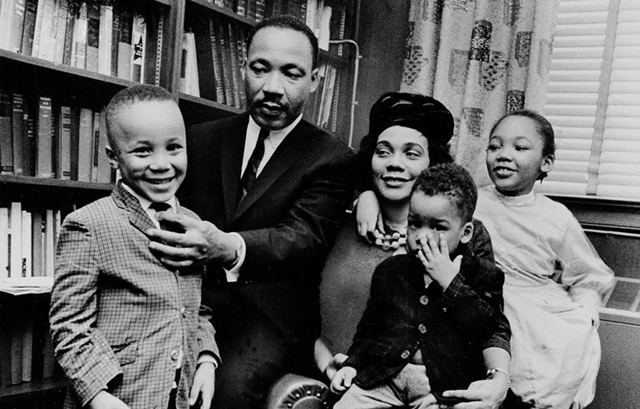

Martin Luther King Jr. lived an extraordinary life. At 33, he was pressing the case of civil rights with President John Kennedy. At 34, he galvanized the nation with his "I Have a Dream" speech. At 35, he won the Nobel Peace Prize. At 39, he was assassinated, but he left a legacy of hope and inspiration that continues today.
In 1996, The Seattle Times created a web page in tribute to Dr. King, collecting the story of his life, photographs of the times in which he lived, and perspectives from politicians, activists, and ordinary citizens on his tremendous legacy. Now, 20 years later, we have created an updated home for that tribute. We hope it will continue to be useful for readers in the years to come.

Biography
King, and his policy of nonviolence, was the dominant force in the civil-rights movement
His words
A selection of King's speeches, sermons and letters, including his "I Have a Dream" speech

"I have a dream that my four little children will one day live in a nation where they will not be judged by the color of their skin, but by the content of their character."Martin Luther King Jr., Lincoln Memorial, Washington D.C., August 28, 1963

Civil rights quiz
Test your knowledge about civil rights
Lesson plan
A variety of activities that look at King’s philosophy
Study guide
Exercises to prompt further discussion about King's life and legacy
Resources
More resources for learning about Martin Luther King Jr.
Don't Miss